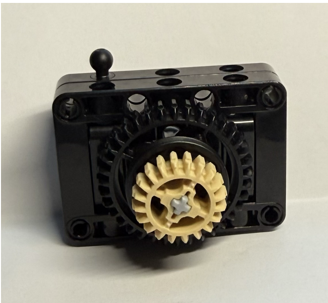
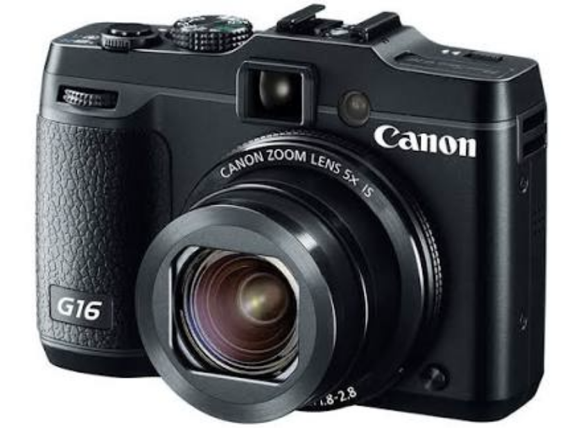

I made a mini camera out of LEGOs. The picture on the right is the actual camera that I have, a Canon G16. The inspiration behind the idea is that I love taking pictures and currently I’ve been documenting all the new foods I’m trying after arriving in Boston. Sadly, I could not bring the camera with me to Tufts so it’s also something that reminds me of home now.